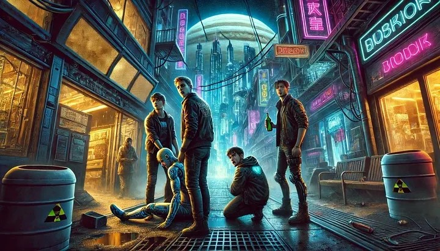

1 A Escuridão de Nova Europa
A coragem não é a ausência de medo, mas o triunfo sobre ele
Aristóteles

O condapt começou a ser iluminado lentamente. O ciclo da manhã estava iniciando. As notícias mais importantes do dia foram projetadas na mesa no outro canto do pequeno espaço. Não havia tempo para se barbear, pensou. Olhou-se no espelho e percebeu que a sua barba era rala e mal crescia. Iria esperar mais um ano antes do procedimento definitivo a laser, que só poderia ser feito aos 20 anos.
— O escudo de radiação ao redor de Nova Europa reteve hoje 95% — afirmava um humano-robô do lado de fora da redoma.
— Em uma década, a situação estará insustentável para humanos não modificados.
Robert saiu para o trabalho diário, ao fechar a porta, todas as luzes se apagaram e a projeção holográfica do jornal encerrou. Teve todo o tempo do mundo para uma boa refeição, nessa manhã artificial.
As manhãs de Nova Europa não eram como na terra ou em luna. Nova Europa não girava como um planeta ao redor do eixo, e mantinha parte escura e parte iluminada. O plano de fazer o planeta girar com a energia nuclear falhou e explodiu, matando alguns humanos-robôs. Mas ele não se importava, como chegara à lua de Júpiter quando ainda era pequeno, não sentia falta do que nunca teve.
Ele trabalhava para o Governo Central, o que lhe permitia viver com certa dignidade. Um condapt, um espaço de 5 por 5 metros quadrados, para si era um luxo em um ambiente com espaço confinado e com reserva de oxigênio. Seu trabalho consistia em entender e escrever as equações da teoria-de-tudo, que substitui a teoria da relatividade, sempre se considerou com sorte.
No final do expediente, depois de suas refeições, foi ao encontro da festa do fim do mundo, a festa do mês de julho, que acontecia próximo ao depósito de reciclagem. Sempre havia boas festas e locais para entretenimento de todos os gostos, inclusive os duvidosos, em toda a redoma.
Ao chegar no portão de identificação, encontrou 4 amigos, um era de estatura baixa, outro tinha um boné na cabeça, um com uma perna mecânica e outro sorridente.
— Trouxe a cachaça conforme combinado. Disse o Baixinho, com uma garrafa contrabandeada do sul-global da antiga terra. — Tome um gole, que chegamos cedo e já estamos quentes.
Robert sugou o líquido de um canudo metálico, de um recipiente que parecia uma bolsa de sangue, era amargo, desceu queimando. Em poucos minutos, ficou relaxado e logo depois eufórico.
— Difícil a vida sem uma boa cachaça. Vamos entrar, a noite é uma criança. — Continuou o Baixinho.
O que tinha uma prótese em uma das pernas e andava com certa dificuldade disse: — Esperamos esse tempo todo, vamos nos divertir.
— Vamos logo, que hoje quero conhecer novas garotas. Disse o de boné.
A festa ocorreu conforme o esperado, a euforia deu lugar ao cansaço e, depois de muito barulho e confusão, os jovens decidiram retornar para seus condapts. No caminho de retorno, as luzes tridimensionais de algumas ruas estavam quebradas, e quase não dava para enxergar nada, e o ambiente ficou parcialmente iluminado, criando sombras estranhas.
— Pessoal, disse Robert. Estou achando muito escuro. Algumas luzes estão com defeito. Darei uma volta no quarteirão que aquela outra rua tem uma visibilidade melhor, nessa mal consigo enxergar.
O de boné riu. — Você é muito medroso mesmo. Irei por aqui, que é mais perto.
O jovem com a perna mecânica bebeu tanto que estava sendo carregado, balbuciou alguma coisa, mas não se fez entender.
O mais sorridente, que continuava sorrindo, seu nome era Well, disse:
— Vamos por aqui. Não quero carregar Dan por mais uma quadra.
— Eu o carrego. Insistiu Robert.
Não teve jeito, os quatro começaram a entrar na rua escura e deixaram Robert sozinho. Robert pensou que seria mais seguro acompanhar os amigos, mas pensou e decidiu voltar pelo caminho mais claro, pois não parecia sensato decidir por preguiça. A rua estava escura e o risco era desnecessário.
Mesmo assim, ele correu para dar a volta até o outro lado e chegar antes dos colegas. Teve medo, mas se manteve firme e continuou. Deu a volta rapidamente no quarteirão e aguardou os companheiros.
Alguns minutos e os colegas não chegaram. Será que já haviam passado? Pensou. Improvável. Procurou ao redor e encontrou uma pessoa na calçada, decidiu ir falar com esse desconhecido.
— Boa noite. Passaram por aqui quatro agora há pouco? Perguntou.
— Não, não passou ninguém já tem alguns minutos. Respondeu o desconhecido sem entender a pergunta.
Foi quando Ric, o amigo de Boné, passou correndo com tudo.
— Corre, corre, corre. Falou Ric, enquanto se aproximava.
Robert ficou sem entender, entre as opções de correr e esperar, decidiu esperar os outros dois. Será que a redoma que protegia a radiação havia dado algum problema? Improvável também. Enquanto isso, Ric corria e se afastava. Ainda deu tempo de perguntar:
— Onde estão Well, Dan e o Baixinho? O que aconteceu?
— Eles estão vindo, bandidos nos perseguiram. E continuou a correr, logo se afastou.
Robert conseguiu avistar os outros três chegando lentamente. O baixinho do lado esquerdo, Well do lado direito e Dan no meio, sendo carregado pelos ombros pelos outros dois, com os pés arrastando. Ao se aproximarem, Robert percebeu arranhões e machucados nos colegas.
— Naquela rua escura, encontramos dois bandidos que quiseram nos roubar. Falou ofegante o Baixinho.
— Por que vocês não correram?
— Tropeçamos em alguma coisa, acho que era alguém deitado no chão. Não podíamos deixar Dan lá, ele estava muito bêbado e não conseguiria correr. Recebi uma paulada no braço, mas segurei e derrubei um dos bandidos. Falou Well ainda ofegante.
— Tirei o sapato e dei uma sapatada na cara do outro — disse o Baixinho.
Dan não conseguia expressar reação, balbuciou alguma coisa incompreensível, realmente ele estava muito bêbado. Beber só entre pessoas de confiança, pensou Robert, e olhe lá. Ao ver Dan assim, beber já não lhe parecia uma boa ideia.
— Os bandidos correram depois.
— Temos que voltar e ver o que aconteceu, vocês disseram que tinha uma pessoa no chão e tropeçaram nela.
— Não é da nossa conta, Robert. Vamos atrás do Ric.
Depois de algumas risadas, Robert, Dan e Well e o Baixinho retornaram para seus condapts que ficavam próximos. Ric estava algumas quadras mais adiante, esperando pelos colegas.
— Por que você correu e nos deixou lá com os marginais? Gritou Well, visivelmente chateado.
— Eu estava com medo de levarem o meu comunicador.
— De que vale isso, quando você sabia que Dan não podia correr?
Todos os outros estavam decepcionados.
— Sinto muito, prometo que isso não acontecerá novamente, vocês verão que eu nunca os abandonarei, me perdoem.
Durante um bom tempo Ric, tentou de alguma forma demonstrar que era um amigo corajoso e que não abandonaria jamais outro em necessidade. Isso o marcou muito, se sentiu mal por abandoná-los.
Ao final do dia artificial, todos voltaram para seus condapts felizes, com exceção de Ric que se sentia mal, prometia a si que faria diferente na próxima vez, nunca mais abandonaria um companheiro. Mas logo todos adormeceram.
Mal sabiam que após atravessar aquela escuridão eles nunca mais seriam os mesmos. Pois foram os primeiros que entraram em contato com o corpo da jovem naquela rua escura.